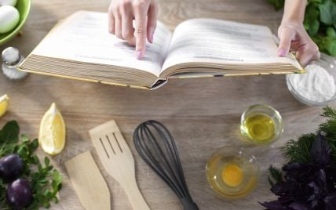
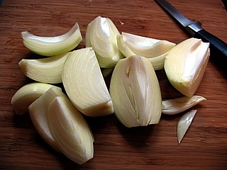
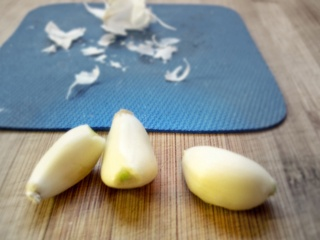
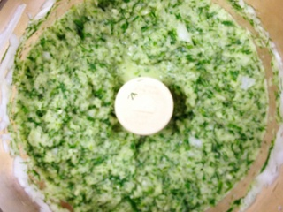
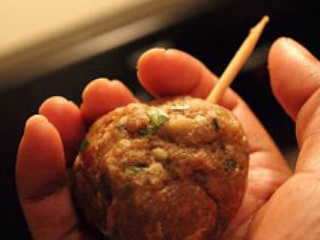
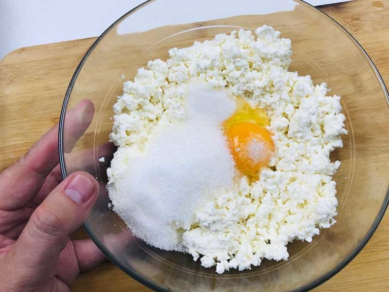
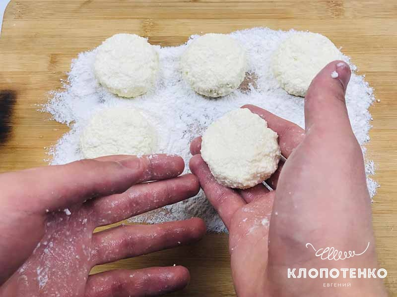
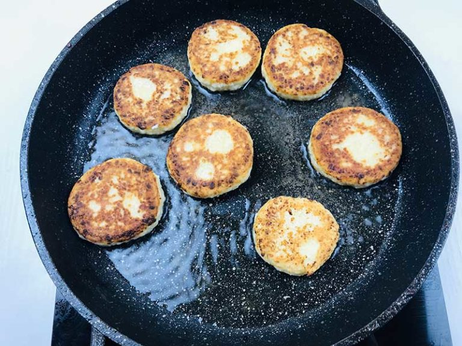
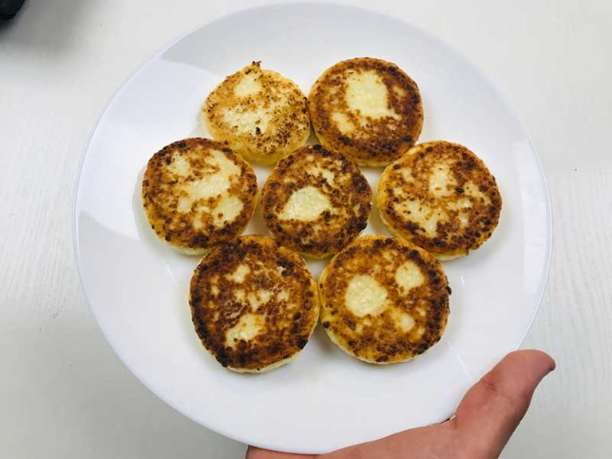

Рецепти
У сучасному суспільстві, де жінки й чоловіки прагнуть бути самодостатніми та незалежними, вони все
більше часу витрачають на свою кар'єру і все менше на домашні справи, зокрема, і приготування їжі.
Багато з них міркують так:
"Зароблю грошей і знайду хорошого кухаря".

Власноруч готувати дешевше
По-перше, власноруч готувати набагато дешевше: потрібно лише придбати продукти, з яких можна
приготувати їжу одразу на кілька днів. А походи до їдальні, кафе і тим більше ресторани коштують
чималих грошей. Уявіть, ви повертаєтеся втомленою з роботи (навчання), страшенно хочеться поїсти і
завалитися спати. А тут доводиться йти не додому, а в кафе, замовляти собі їжу, і вже не вийде
розслабитися перед телевізором в улюбленому халаті, наминаючи гарячий обід. Потрібні сили й гроші,
щоб просто втамувати голод. Набагато простіше було б напередодні ввечері зробити заготовку для
вечері, або її повністю приготувати, щоб ввечері просто розігріти. Постійна залежність від кафе й
ресторанів швидко починає обтяжувати, і будь-яка жінка або чоловік дуже жалкують про те, що не
вміють самі готувати. А якщо у вас сім'я, то ви просто не зможете постійно харчуватися не вдома.
Приготування їжі – це антистрес
Приготування їжі – це ще й прекрасний засіб для зняття стресу і підняття настрою. Людина
відволікається від повсякденних турбот і проблем на роботі і присвячує себе справжній творчості.
Будь-яку страву можна змінити і перетворити на свій смак, щось додати чи відняти, створити щось
незвичайне і нове – і в цьому є своя принадність! Багато людей, поринаючи в кулінарну творчість,
отримують від цього масу задоволення і відпочивають, а потім відчувають чимало позитивних емоцій від
того, що оточення оцінило її старання. Приготування їжі – це ще один спосіб самоствердження,
підвищення власного IQ.
Джерело цікавої інформації
Приготування їжі – це воістину невичерпне джерело цікавої інформації. Людина дізнається про
кухні
різних країн світу, вчиться використовувати ті чи ті секрети у своїй творчості, отримує знання,
які
завжди згодяться або наштовхнуть на несподіване кулінарне відкриття. Для багатьох кулінарія стає
справжнім хобі, до того ж таке захоплення оточенням сприймається на ура.
Готуємо м'ясо
Люля-кебаб в духовці – це дуже смачне м'ясне блюдо зі спеціями, яке прийнято
готувати на Кавказі, Балканах, а також в Середній Азії. Зазвичай готують його на мангалі, але не
менш смачним люля-кебаб виходить і в духовці! Головне в самому процесі приготування добре
вимісити фарш і охолодити, щоб при запіканні він не розвалювався, а міцно тримався на дерев'яних
паличках. Пригощайтеся!
Інгредієнти для приготування люля-кебаба в духовці:
- Фарш баранячий або свіжий свинячий - 500 грам
- Сало свиняче свіже - 50-70 грам
- Цибуля ріпчаста - 300 грам
- Свіжа Зелень кропу - 1 пучок
- Часник середнього розміру - 5-6 зубчиків
- Насіння коріандру - 1 щіпка
- Спеція зіра - 1 щіпка
- Сіль - за смаком
- Перець червоний гострий мелений - на кінчику ножа
- Лимон середнього розміру - 1/2 частина
Крок 1: готуємо ріпчасту цибулю.

За допомогою ножа очищаємо цибулю від лушпиння. Після – ретельно промиваємо овоч під проточною
водою і викладаємо на обробну дошку. Нарізаємо на четвертинки і перекладаємо у вільну тарілку.
Крок 2: готуємо часник.

Скориставшись ножем, злегка придавлюємо часник прямо на обробній дошці. Дана процедура дозволить з
легкістю зняти лушпиння.
Після цього злегка промиваємо овоч під проточною водою і поки що
відкладаємо в сторону вільну тарілку.
Крок 3: готуємо основу для страви.

У ступку висипаємо такі спеції, як зіра і насіння коріандру. З допомогою маточки добре перетираємо їх
між собою і поки що відставляємо в сторону.
В блендер або м'ясорубку, або кухонний комбайн викладаємо такі інгредієнти як цибуля,
часник, кріп, а також сало. Подрібнюємо все до однорідної маси. Увага: сало додавати не обов'язково,
тільки в тому випадку, якщо у нас сухуватий м'ясний фарш.
В глибоку миску викладаємо м'ясний фарш, перемелені раніше інгредієнти, суміш спецій, а також
солимо за смаком і додаємо гострий червоний мелений перець і виливаємо свіжовичавлений сік лимона.
Скориставшись столовою ложкою, все ретельно перемішуємо до утворення однорідної маси. Закриваємо
ємність щільно кришкою від каструлі і ставимо настоятися протягом 30 хвилин в холодильник на середню
полицю. Це необхідно зробити, щоб жирний фарш став більш щільним по консистенції, адже так буде
легше формувати блюдо.
Крок 8: готуємо люля-кебаб в духовці.

Заздалегідь розігріваємо духовку до максимальної температури. Дуже важливим етапом в приготуванні
люля-кебаб є підготовка листа. Насамперед необхідно правильно його накрити харчовою фольгою, так як
саме вона посприяє тому, щоб у нас вийшло сьогодні за смаком страва. До того ж фольга буде відбивати
світло прямо на м'ясні котлетки, і вони краще запекутся. Крім цього нам потрібен невеликий димової
ефект, який легше добути саме таким способом.
Отже, поверх дека розміщуємо грати від духовки. Після цього все ретельно покриваємо фольгою так, щоб
її краї заходили на борту дека з внутрішньої сторони. Чистими руками робимо невеликі поглиблення в
місцях осередків сітки, в які і буде стікати жир, що випливає з фаршу. Увага: якщо ширина фольги
невелика, тоді необхідно прикріпити до основного відрізку ще один, і таким чином збільшити розмір
полотна.
Коли фарш настоїться в холодильнику, дістаємо його і починаємо чистими сухими руками формувати блюдо.
Для цього беремо невелику кількість м'ясної маси на долоні, формуємо з неї коржик овальної форми. На
середину викладаємо дерев'яну паличку і після – загортаємо її в коржик так, щоб у нас вийшла
довгаста котлетка.
Коли все буде готово, ставимо деко в духовку на середній рівень. У процесі запікання жир і волога
із фаршу почнуть стікати у виїмки, при цьому, не зачіпаючи саму страву. Таким чином, жир почне
кипіти, просочуючи люля-кебаб як раз тим димчастим ароматом, як якщо б ми це блюдо готували на
вогнищі. Уважно стежимо за процесом приготування. Як тільки м'ясо зверху вкриється золотистим
кольором, відкриваємо дверцята духовки і акуратно перевертаємо люля-кебаб на іншу сторону.
Крок 4: подаємо люля-кебаб в духовці
Перекладаємо готові люля-кебаб на спеціальну плоску тарілку і подаємо до обіднього столу. Таке блюдо
можна прикрасити кільцями цибулі і свіжою зеленню петрушки. В якості гарніру до нього відмінно
підійде салат зі свіжих овочів і шматочки хліба, а також лаваш.
Приємного вам апетиту!
Готуємо солоденьке
Любите починати ранок з чогось смачненького, тоді цей рецепт сирників саме для вас. Він дуже
простий та завжди виходить, тож гарний настрій вам буде гарантовано.
Прості речі часом виявляються набагато складнішими, ніж здаються. З сирниками та ж сама історія.
Звичайно, для досвідчених господинь ця страва настільки звична, що і говорити про це не слід. Але,
як виявилося, приготування смачних сирників справа не така вже й проста і у багатьох викликає
складнощі. Я вирішив виправити такий стан речей і хочу поділитися з вами простим рецептом сирників,
за яким вони завжди виходять. А якщо ви захочете прокачати рецепт, спробуйте приготувати сирники з
маком.
- 400 г Сир
- 1 шт. Яйце
- 3 ст. л. Борошно
- 3 ст. л. Цукор
- 3-4 ст. л. Соняшникова олія для смаження
- 1 дрібка Сіль
- 10 г Ванільний цукор
Крок-1
Сир (400 г) перекладіть в невелику скляну або пластикову миску. Додайте дрібку солі, одне яйце, 3 ст.
л. цукру, і 10 г ванільного цукру. Я не люблю, щоб сирники були занадто солодкими, але ви можете
додати трохи більше цукру, наприклад 4 ст. л. Сир для сирників можна використовувати як базарний,
так і магазинний. Головне, щоб він був не кислим і не сильно вологим. Якщо використовуєте магазинний
сир, то беріть сир в м'яких поліетиленових пакетах.

Крок-2
Тепер запаніруйте сирники в борошні, щоб вони не втратили форму і засмажити до апетитною скоринки.

Крок-3
Розігрійте антипригарну пательню з 3-4 ст. л. соняшникової олії на середньому вогні. Пательня для
сирників повинна добре розігрітися. Не зменшуйте вогонь при смаженні, так ваші сирники підсмажаться
якнайкраще. Слідкуйте, щоб сирники не пригоріли. Для того, щоб отримати красиву золотисту скориночку
я обсмажував сирники по 2-3 хвилини з кожного боку. Але у вас може піти трохи більше або менше часу.

Крок-4
Щоб видалити зайву олію з готових сирників, перекладіть їх спочатку на паперовий рушник. Потім
перекладіть сирники в тарілки для подачі, посипте трохи цукровою пудрою, додайте варення або
сметану.
